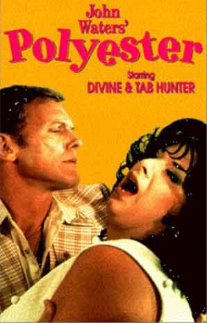
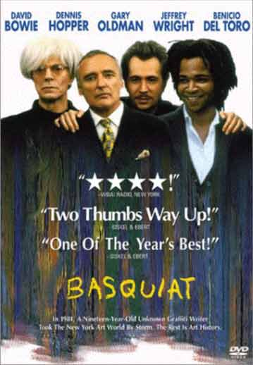

dunst aktivist møder hver tirsdag
Vi planlægger nye dunst aktiviteter.
Kom med dine idéer!
eller
kom bare forbi og nyd en kop kaffe.
medlemskab kr. 50,- (1. gang gratis)
entré gratis/10 kr,- ved storskærm
tema: John Waters special

Multiple Maniacs
Directed by John Waters (1970)

Polyester
Directed by John Waters (1981)
Hilsen Jørgen og Anderz
Gratis Internet Café
/Loxi
dunst aktivist møder hver tirsdag
Vi planlægger nye dunst aktiviteter.
Kom med dine idéer!
eller
kom bare forbi og nyd en kop kaffe.
medlemskab kr. 50,- (1. gang gratis)
entré gratis/10 kr,- ved storskærm
tema: gay artists
 Francis Bacon dokumenta
Francis Bacon dokumentaDirected by David Hinton (I) (1988)
 Schweigen
= Tod
Schweigen
= Tod Med Keith Harring
Directed by Rosa von Praunheim aka
Holger Bernhard Bruno Mischwitzky (1990)
Hilsen Jørgen og Anderz
Gratis Internet Café
/Loxi
dunst aktivist møder hver tirsdag
Vi planlægger nye dunst aktiviteter.
Kom med dine idéer!
eller
kom bare forbi og nyd en kop kaffe.
medlemskab kr. 50,- (1. gang gratis)
entré gratis/10 kr,- ved storskærm
tema: Queer lifestyle

Basquiat
directed by Julian Schnabel (1996)
queer life - dokumentar
Hilsen Jørgen og Anderz
Gratis Internet Café
/Loxi
Medbring drikkelige rester.
tema: Xmas special
dunst bio:
tegnefilm + film fra dunst arkiver + surprises
(medbring selv !)
dunst værksted:
kom og lav dine julegaver om til noget brugbart
dunst internet:
send de sidste julehilsner!
Hilsen Jørgen og Anderz
dunst aktivist møder hver tirsdag
Vi planlægger nye dunst aktiviteter.
Kom med dine idéer!
eller
kom bare forbi og nyd en kop kaffe.